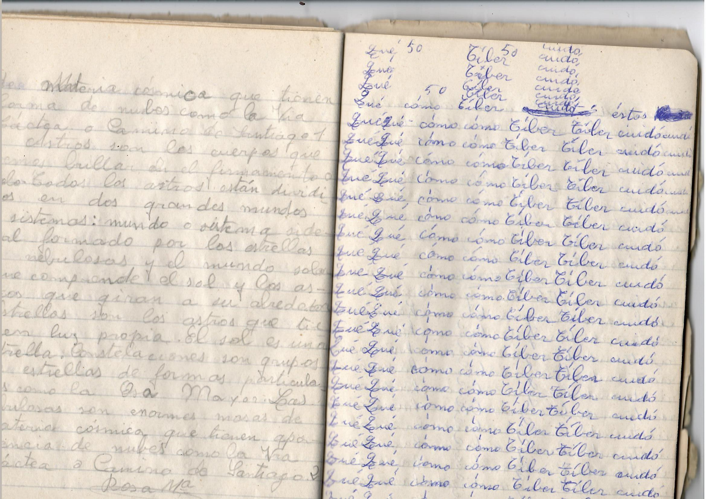
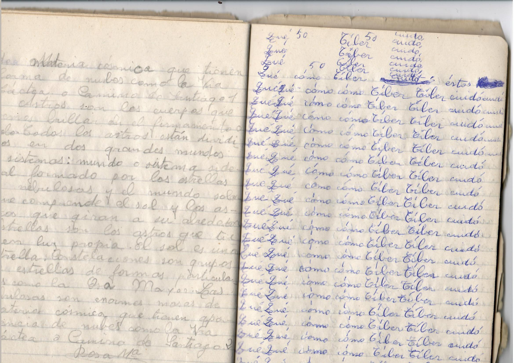

Comunicación de Campo Cercano es un programa de mediación situado en el Valle de Esteríbar. Tomando como referencia algunas de las escuelas rurales que han sido parte de la historia educativa del valle, (las de Zubiri, Larrasoaña, Eugui y Urdániz), el programa busca activar el entramado de vínculos preexistentes entre las personas que habitan diferentes puntos de Esteríbar.
El programa se articuló a través de cuatro encuentros presenciales donde se revisaron diferentes documentaciones históricas vinculadas a estos enclaves y material digitalizado cedido por las personas del Valle. En ellos, pusimos en diálogo textos y obras de artistas contemporáneas con los relatos de las personas del Valle.
Experimentamos con tecnologías accesibles para crear nuevos relatos colectivos. El resultado tomó diferentes formas: escritura experimental colectiva donde expresar deseos, mapas intervenidos que ahora representan tiempos diversos o un campanario cuyo tañido es ahora una voz sintética.
Como cierre del programa, esta web es accesible a través de diferentes etiquetas NFC (Near Field Communication) situadas cerca de las antiguas escuelas rurales. Se trata de una tecnología inalámbrica que permite la transferencia de datos entre dos dispositivos cuando se encuentran a unos pocos centímetros. A través de ella, generando campos cercanos, compartimos narrativas vinculantes entre las escuelas rurales.El proyecto solo ha sido posible gracias a la profunda implicación de las personas del Valle y las compañeras de CIVCAN. Muchas gracias a todas.
 
